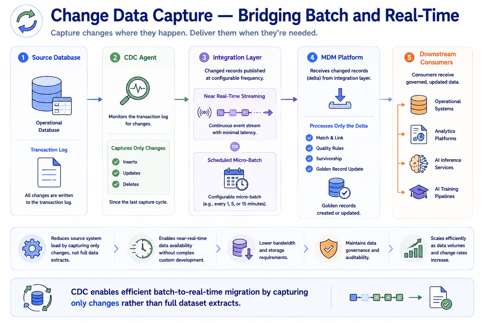
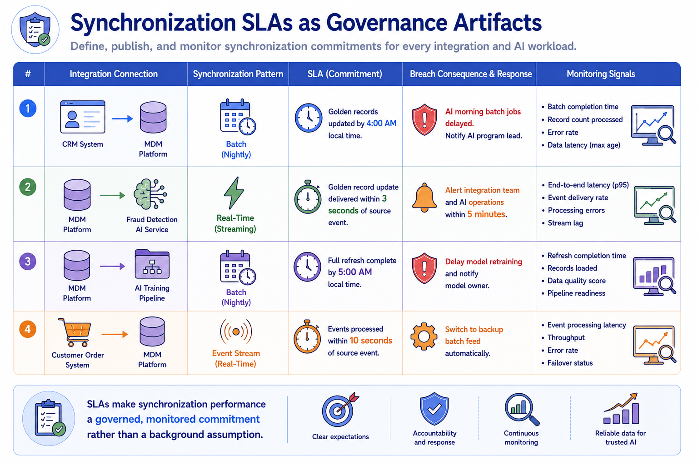
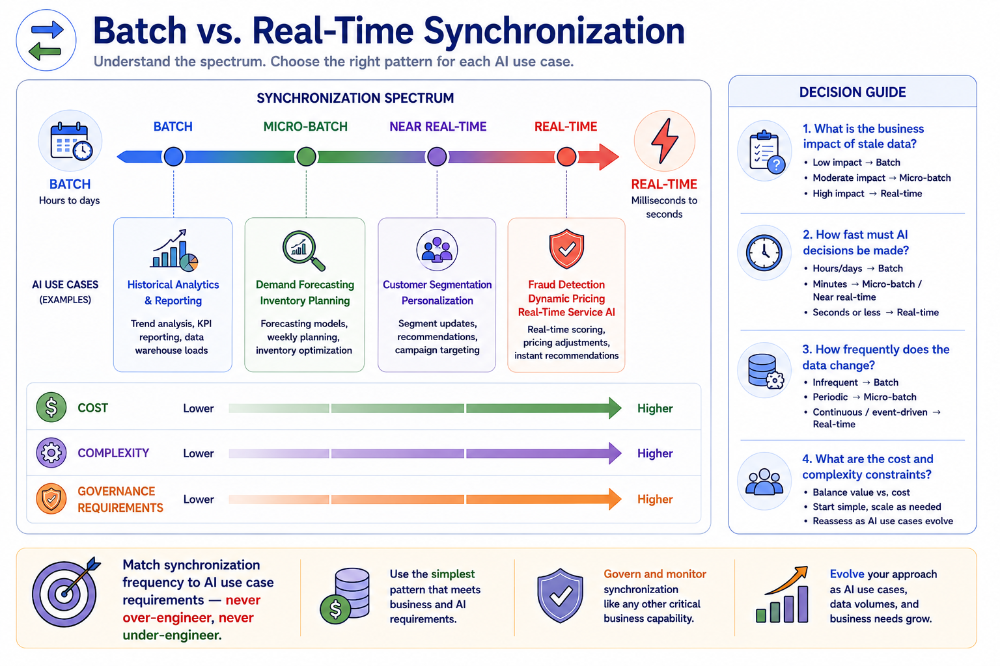

Batch vs Real-Time Synchronization
Module support notes
Change Data Capture as a Bridge Between Batch and Real-Time
Change data capture is a technology pattern that sits at the boundary between batch and real-time synchronization and is often the practical pathway for organizations transitioning from batch-only MDM integration toward real-time capability. Rather than extracting and loading full datasets on a schedule, CDC monitors database transaction logs to capture only the records that have actually changed since the last capture cycle.
These changes can be published at any frequency from near-real-time to scheduled micro-batch, giving organizations flexible control over synchronization latency without the full infrastructure complexity of native event streaming. For MDM programs beginning to support real-time AI inference use cases, CDC-based integration often provides a pragmatic first step toward lower latency without requiring a complete integration re-architecture.
Tip
If your organization is running batch-only MDM integration but has AI inference use cases that need fresher data, CDC is the right starting point — not a full event streaming re-architecture. CDC delivers delta-based synchronization at configurable latency, requires less operational complexity than native event streaming, and can be implemented incrementally connection by connection rather than requiring a wholesale infrastructure change.

Synchronization SLAs and AI Program Governance
Synchronization SLAs transform implicit assumptions about data currency into explicit, monitored governance commitments. Without defined SLAs, AI program teams assume their data will be current without any mechanism for detecting or responding when it isn't. With SLAs, each integration connection has a defined performance standard, a monitoring mechanism that detects breaches, and a defined response procedure — including notifications to AI model owners when synchronization failures could affect model quality or inference accuracy.
Establishing synchronization SLAs as part of the MDM governance framework, rather than as an operational infrastructure concern, ensures that data currency commitments to AI programs are treated with the same rigor as data quality commitments.
Note
SLAs make synchronization performance a governed, monitored commitment rather than a background assumption. Every integration connection serving an AI use case should have a defined SLA — including what the latency target is, what constitutes a breach, who is notified when a breach occurs, and what the automatic fallback behavior is. A fraud detection AI that goes 20 minutes without a golden record update due to an unmonitored integration failure is an unacceptable risk that a synchronization SLA would have surfaced immediately.

The right synchronization frequency is determined by AI use case requirements — never by what is technically easiest or what the existing integration infrastructure already does.
